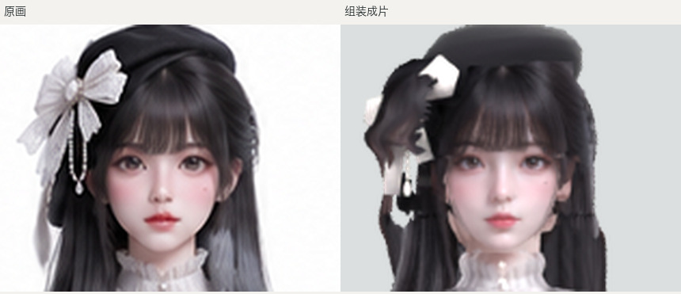
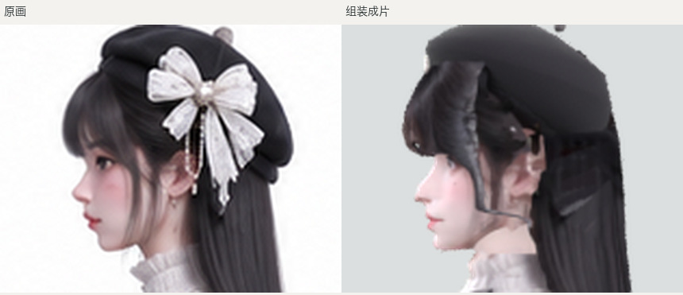
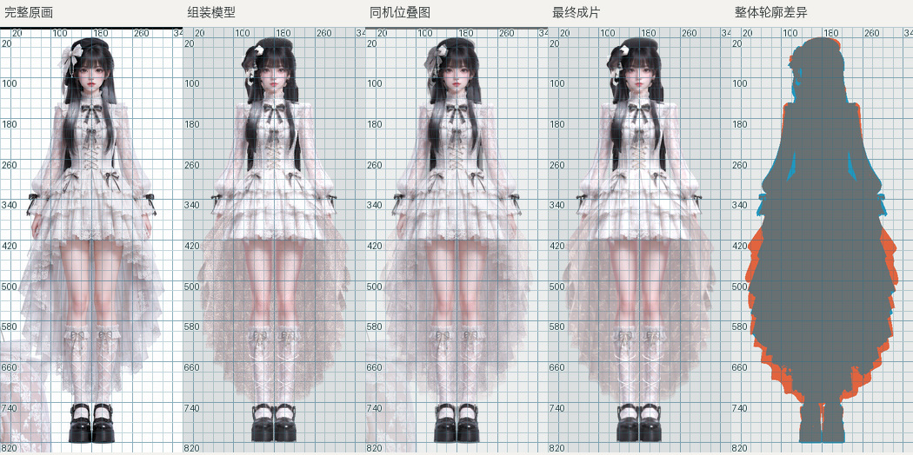
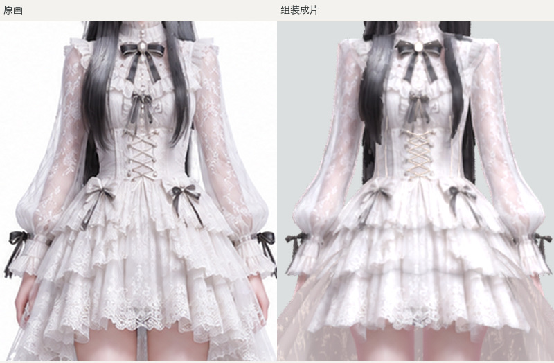
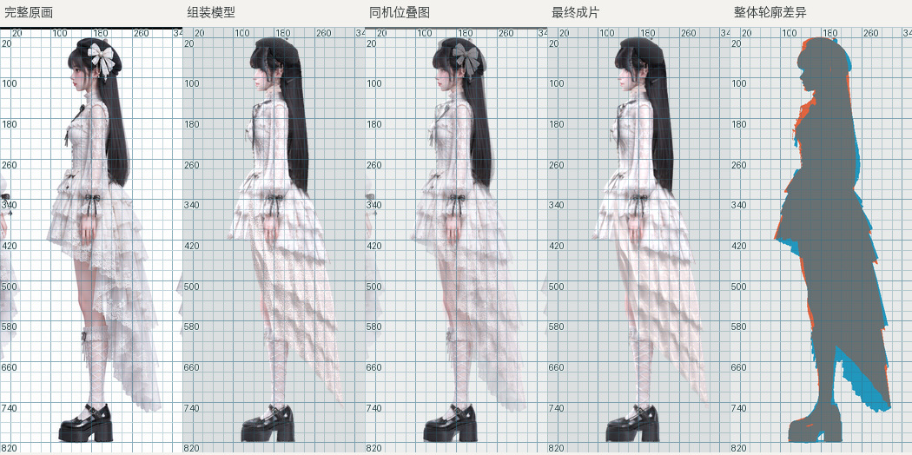
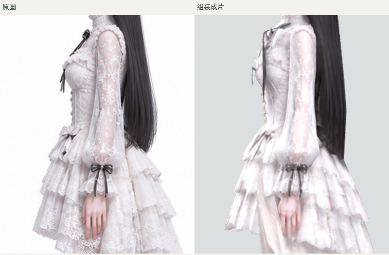
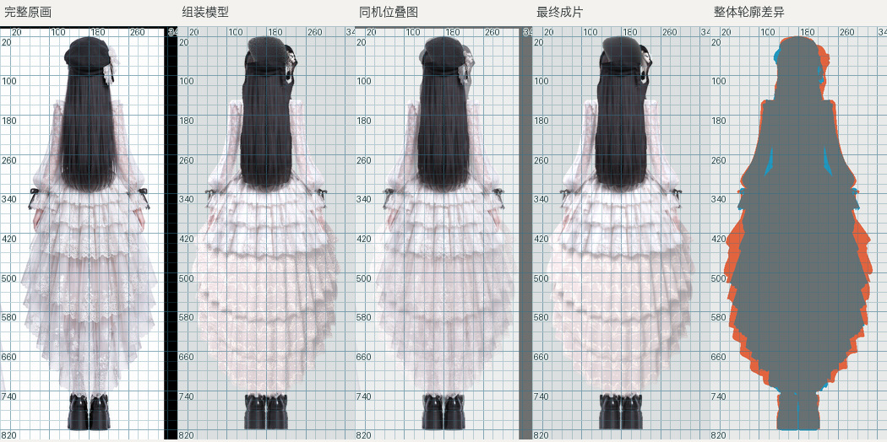
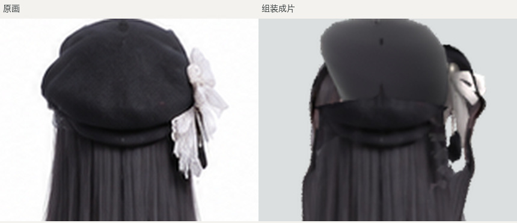
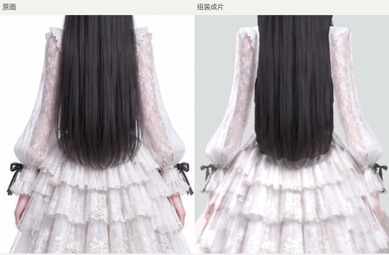

整体与逐件网格对照
蓝色为原画有而模型缺少的区域，橙色为模型多出的区域。灰色为重合，灰紫色为排除区。网格标注采用该栏原画的像素坐标，偏移为模型减原画，向右、向下为正。
逐段边界图中，白线连接模型边与原画目标，蓝圈标目标。红色表示搜索内缺边，紫色表示有多个候选，灰色表示画幅或遮挡证据不足。
完整测量记录
高精度对照 有部位需返修
本次覆盖 3/3 栏、3/3 件。已核对 0 项。
需返修 16 项 front 整体轮廓、front 可见发层、front 头脸与颈部、front 鞋履与鞋底、front 眉眼鼻唇、side 整体轮廓、side 可见发层、side 头脸与颈部、side 鞋履与鞋底、side 额鼻唇颏、back 整体轮廓、back 可见发层、back 头脸与颈部、back 鞋履与鞋底、back 后脑与领口、头脸与颈部多视图面部核对
待核对 3 项 front 黑缎蝴蝶结与分层前短后长裙、side 黑缎蝴蝶结与分层前短后长裙、back 黑缎蝴蝶结与分层前短后长裙
头脸与颈部 · 面部多视图
侧向机位符合配置，绕头部上下轴的夹角 +90.0°，侧面仰俯 -0.0°
正面 需返修
原图裁框 158 × 124 px

同位置细网格 右外眼角 偏差最大，0.94 px，修向原画 (-0.0, +0.9) px侧面 需返修
原图裁框 158 × 124 px

同位置细网格 颏前 偏差最大，4.47 px，修向原画 (+4.0, +2.0) px仍需处理的局部
front

需返修 原尺寸叠图 整体逐段边界定位轮廓交并比 0.915，缺少 2643 px²，多出 10583 px²
包围框左、上、右、下偏移 -6 / +0 / +6 / -3 px
原画沿法线找模型 最大 17.95 px，P95 14.91 px，匹配 2105/3064，搜索内缺边 753，多解 132，画幅不足 74
模型沿法线找原画 最大 17.95 px，P95 15.28 px，匹配 2341/3274，搜索内缺边 830，多解 103，画幅不足 0
最大可定位偏差处，模型 (140.3, 93.5) 向原画位移 (-17.8, -2.5) px造型与神态 需返修
眉眼鼻唇 需返修 齐刘海下的眼位和小嘴清楚，蝴蝶结外围的细带较简化。对照标点 1 右外眼角 2 左外眼角 3 鼻尖 4 唇缝 5 颏点

黑缎蝴蝶结与分层前短后长裙 待核对 分件
- 可见发层 需返修 整幅网格 · 局部网格 · 穿戴与遮挡 · 逐段边界定位
轮廓交并比 0.619，缺少 750 px²，多出 3463 px²
包围框左、上、右、下偏移 -8 / +3 / +8 / +21 px
原画沿法线找模型 最大 17.86 px，P95 11.28 px，匹配 995/1532，搜索内缺边 74，多解 463，画幅不足 0
模型沿法线找原画 最大 17.78 px，P95 14.45 px，匹配 1174/2048，搜索内缺边 516，多解 358，画幅不足 0
最大可定位偏差处，模型 (205.8, 83.3) 向原画位移 (+17.6, -2.8) px
- 头脸与颈部 需返修 整幅网格 · 局部网格 · 穿戴与遮挡 · 逐段边界定位
轮廓交并比 0.714，缺少 638 px²，多出 215 px²
包围框左、上、右、下偏移 +29 / +27 / -6 / -4 px
原画沿法线找模型 最大 17.45 px，P95 13.81 px，匹配 264/558，搜索内缺边 268，多解 26，画幅不足 0
模型沿法线找原画 最大 16.16 px，P95 12.19 px，匹配 246/302，搜索内缺边 19，多解 37，画幅不足 0
最大可定位偏差处，模型 (154.9, 87.3) 向原画位移 (-16.9, +4.2) px
- 鞋履与鞋底 需返修 整幅网格 · 局部网格 · 穿戴与遮挡 · 逐段边界定位
轮廓交并比 0.762，缺少 606 px²，多出 685 px²
包围框左、上、右、下偏移 +0 / +2 / -2 / -3 px
原画沿法线找模型 最大 17.88 px，P95 10.56 px，匹配 721/960，搜索内缺边 92，多解 89，画幅不足 58
模型沿法线找原画 最大 13.88 px，P95 4.83 px，匹配 503/714，搜索内缺边 11，多解 200，画幅不足 0
最大可定位偏差处，模型 (178.9, 788.5) 向原画位移 (-17.9, +0.0) px
side

需返修 原尺寸叠图 整体逐段边界定位轮廓交并比 0.888，缺少 8469 px²，多出 2695 px²
包围框左、上、右、下偏移 -4 / -1 / -1 / -3 px
原画沿法线找模型 最大 18.00 px，P95 10.73 px，匹配 2458/3082，搜索内缺边 473，多解 146，画幅不足 5
模型沿法线找原画 最大 18.00 px，P95 10.14 px，匹配 2502/3018，搜索内缺边 419，多解 97，画幅不足 0
最大可定位偏差处，模型 (165.5, 627.0) 向原画位移 (+0.0, +18.0) px造型与神态 需返修
额鼻唇颏 需返修 侧发盖住部分眼角，耳旁蝴蝶结的厚度和带尾有差异。对照标点 1 鼻尖 2 唇缘 3 颏前

黑缎蝴蝶结与分层前短后长裙 待核对 分件
- 可见发层 需返修 整幅网格 · 局部网格 · 穿戴与遮挡 · 逐段边界定位
轮廓交并比 0.696，缺少 428 px²，多出 3300 px²
包围框左、上、右、下偏移 -1 / +2 / -6 / +11 px
原画沿法线找模型 最大 17.71 px，P95 9.68 px，匹配 773/1062，搜索内缺边 102，多解 187，画幅不足 0
模型沿法线找原画 最大 17.84 px，P95 8.21 px，匹配 753/1436，搜索内缺边 489，多解 194，画幅不足 0
最大可定位偏差处，模型 (236.1, 115.5) 向原画位移 (-17.8, +1.4) px
- 头脸与颈部 需返修 整幅网格 · 局部网格 · 穿戴与遮挡 · 逐段边界定位
轮廓交并比 0.710，缺少 489 px²，多出 254 px²
包围框左、上、右、下偏移 +1 / +10 / -17 / -4 px
原画沿法线找模型 最大 17.78 px，P95 13.67 px，匹配 265/572，搜索内缺边 180，多解 127，画幅不足 0
模型沿法线找原画 最大 17.92 px，P95 13.87 px，匹配 336/534，搜索内缺边 121，多解 77，画幅不足 0
最大可定位偏差处，模型 (178.5, 68.8) 向原画位移 (-9.5, +15.2) px
- 鞋履与鞋底 需返修 整幅网格 · 局部网格 · 穿戴与遮挡 · 逐段边界定位
轮廓交并比 0.781，缺少 678 px²，多出 570 px²
包围框左、上、右、下偏移 +1 / +2 / -1 / -2 px
原画沿法线找模型 最大 17.91 px，P95 13.30 px，匹配 480/732，搜索内缺边 90，多解 162，画幅不足 0
模型沿法线找原画 最大 17.83 px，P95 12.10 px，匹配 406/614，搜索内缺边 24，多解 184，画幅不足 0
最大可定位偏差处，模型 (176.5, 765.0) 向原画位移 (-8.0, -16.0) px
back

需返修 原尺寸叠图 整体逐段边界定位轮廓交并比 0.902，缺少 1883 px²，多出 13278 px²
包围框左、上、右、下偏移 -12 / +0 / +10 / -3 px
原画沿法线找模型 最大 17.97 px，P95 16.07 px，匹配 1878/2660，搜索内缺边 577，多解 144，画幅不足 61
模型沿法线找原画 最大 18.00 px，P95 16.04 px，匹配 2100/3268，搜索内缺边 1073，多解 95，画幅不足 0
最大可定位偏差处，模型 (292.5, 336.0) 向原画位移 (+0.0, -18.0) px造型与神态 需返修

后脑与领口 需返修 后发覆盖上背，层纱于腰下展开；细纹和裙摆透光有差异。
黑缎蝴蝶结与分层前短后长裙 待核对 分件
- 可见发层 需返修 整幅网格 · 局部网格 · 穿戴与遮挡 · 逐段边界定位
轮廓交并比 0.876，缺少 1634 px²，多出 1670 px²
包围框左、上、右、下偏移 +0 / -39 / +10 / -9 px
原画沿法线找模型 最大 17.88 px，P95 13.60 px，匹配 825/994，搜索内缺边 74，多解 95，画幅不足 0
模型沿法线找原画 最大 17.96 px，P95 14.16 px，匹配 812/1190，搜索内缺边 254，多解 124，画幅不足 0
最大可定位偏差处，模型 (239.5, 66.3) 向原画位移 (-11.5, +13.8) px
- 头脸与颈部 需返修 整幅网格 · 局部网格 · 穿戴与遮挡 · 逐段边界定位
轮廓交并比 0.000，缺少 34 px²，多出 32 px²
包围框左、上、右、下偏移 -60 / +6 / -73 / -23 px
原画沿法线找模型 无确定对应，匹配 0/84，搜索内缺边 84，多解 0，画幅不足 0
模型沿法线找原画 无确定对应，匹配 0/30，搜索内缺边 30，多解 0，画幅不足 0
- 鞋履与鞋底 需返修 整幅网格 · 局部网格 · 穿戴与遮挡 · 逐段边界定位
轮廓交并比 0.788，缺少 243 px²，多出 1056 px²
包围框左、上、右、下偏移 -1 / +0 / +0 / -3 px
原画沿法线找模型 最大 17.92 px，P95 13.33 px，匹配 567/902，搜索内缺边 210，多解 84，画幅不足 41
模型沿法线找原画 最大 14.90 px，P95 8.33 px，匹配 366/622，搜索内缺边 15，多解 241，画幅不足 0
最大可定位偏差处，模型 (137.5, 756.0) 向原画位移 (+8.0, +16.0) px